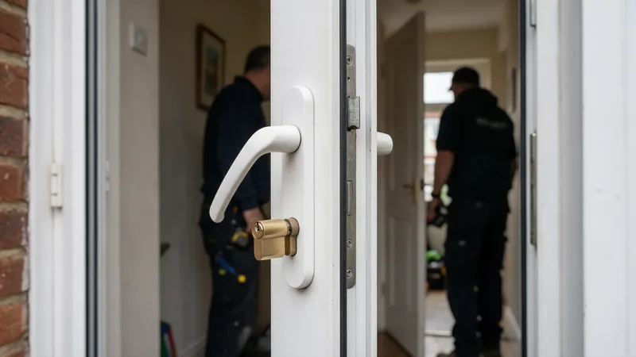

Generated photoGenerated for this demo. Not a photograph of a real job.
How the door locks
Lifting the handle on a uPVC door is not just lifting a handle. It drives a gearbox buried in the middle of the edge of the door, which throws a set of hooks, rollers and bolts up and down into keeps screwed into the frame. Turning the key then locks that gearbox in place.
So three different things have to be right: the gearbox has to work, the hooks have to line up with the keeps, and the cylinder has to turn the gearbox. When any one of them is out, the door stops locking.
What is in the edge of your door
The warning you get
Here is the useful part. These doors nearly always warn you, and the warning is always the same: the handle gets harder to lift. It starts as a bit of a push in cold weather. Then it is a push all year. Then you learn to pull the door towards you with one hand while you lift with the other. Then one day it does not go at all.
What is happening in that time is that the hooks are not meeting the keeps cleanly, so you are making the gearbox do the work the alignment should be doing. The gearbox is the part that gives up under that, and it gives up at the worst time, usually with the door shut.
The three failures, in order of likeliness
The door has dropped
Hinges settle and frames move. The hooks end up a couple of millimetres below the keeps, and everything after that is force. This is the cheapest of the three to put right: hinge adjustment, and the keeps moved slightly.
The gearbox has failed
Usually because of the above, left for a year. The handle goes slack, or it lifts and nothing moves, or the key turns and nothing happens. The strip comes out, the gearbox gets matched and changed, the door and frame stay as they are.
The cylinder has worn
The key gets stiff, then it needs a wiggle, then it turns without driving anything. A cylinder is a part held by one screw. It is the smallest of the three jobs and the one most likely to leave you with a key snapped off in a door.
What it is almost never
A new door. That is worth saying plainly, because this is the point at which people get told a door needs replacing. The list above is all parts and adjustment. A door firm is the right answer when the frame has gone, when the panel has failed, or when the door is so far out of true that nothing will line up, and that is a much smaller number of doors than the number of people who get quoted for one.
What to do this week
Go and lock your front door and pay attention to the handle. If you are putting any real effort in, or if you have developed a technique, get somebody to look at it while it is still a job you can book. A door that needs a lift in November is a door that will not lock in February, and the difference in cost between those two visits is the whole point of this article.
Written for this demo from general trade knowledge. It is not advice on your door, and it is no substitute for somebody having a look at it.
More advice
While you are here.
 Generated photo
Generated photoLocked out: what to do first
Five minutes of checking before you ring anybody, and the one thing that stops a lockout turning into a new door.
 Generated photo
Generated photoChanging locks when you move house
Nobody knows how many keys to a house are out there. Here is how to think about it on the week you move in.
Want somebody to look at the actual door?
Tell us what it is doing and your postcode and we will book a visit. Five minutes at the door beats any article.